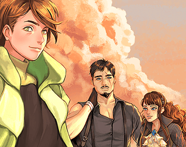

Gataela - Demo
Detalhes
|  | |
| Tempo de jogo | Não Jogado |
| Última Atividade | Nunca |
| Adicionado | 30/03/2025 23:13:51 |
| Modificado | 30/03/2025 23:15:03 |
| Status de Conclusão | Not Played |
| Biblioteca | Itch.io |
| Fonte | itch.io |
| Plataforma | PC (Windows) |
| Data de Lançamento | 21/02/2017 |
| Pontuação da Comunidade | |
| Avaliação da crítica | |
| Pontuação do Usuário | |
| Gênero | |
| Desenvolvedor | |
| Editor | |
| Funções | |
| Links | |
| Tag | [GGDeals] Ignored |
Descrição

A decade ago a civil war tore across the Kingdom of Gataela. Zack, orphaned during the conflict, embarks on a mission to improve the lives of his loved ones. Uncover schemes, investigate mysteries, and debate the citizens and nobles of Gataela! Will Zack succeed... Or will he discover hidden truths that threaten to rip apart the nation all over again?

- Two Battle Systems: Timed turn-based, and Debate battles where you can negotiate, convince, and debate with NPCs
- Speaking to NPCs is important: NPCs can give you the facts you need to back up your arguments in debates
- Skits: Get to know more about the characters and the world
- Skills level up with you: The more you use a skill, the better you'll get at it
- Point allocation: Distribute points each time you level up and build your party however you want
- Science is on your side: Use gunpowder and science to craft items which can help you get out of a pinch
- Costumes: Changing your outfit will also change your overworld's appearance, and their appearance in skits

Q: Can I do a Let's Play/Review/Stream of the demo?
A: Yep! Go for it! We'd also love to see it~
Q: What are the minimum requirements to play the demo?
A: Windows 7, 8 or 10 with at least 8GB of RAM.
Q: What is the game engine used?
A: Gataela is built using Gamemaker Studio 2.
Q: How long is the demo? How long will the final game be?
A: The demo is approximately 3-5 hours long depending on your familiarity with RPGs. Based off that, the final game will be around 30-50 hours long.